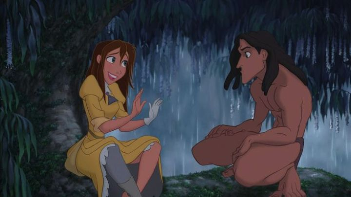

1999's "Tarzan" is officially referred to by fans as the last of the "Disney Renaissance." There were certainly some missteps during that period, and I tend to state the early 1990's, from "The Little Mermaid" to "The Lion King," as being the true start and end of that era. But to me, "Tarzan" was a true successor to those types of movies, perhaps the last such 2D movie DIsney would release besides "Treasure Planet" a few years later. This movie seemed to be the perfect blend of modern digital / CGI techniques with 2D animation, the best hybrid of stylization with classical animation rules. It also has the best soundtrack.OK, the songs in "Tarzan" are debatable. It isn't a traditional musical, instead learning from the success of Elton John contributing to "The Lion King" and giving another rock star a chance to direct the songs. This time, it was Phil Collins, and this time, characters wouldn't break out into song or dance numbers; Phil sings all the songs himself in the background. Sounds unorthadox, but this got rid of the typically unbelievable moments you'd normally see in a cartoon musical, and the music complements the drama and excitement that can be naturally performed by the animation. It feels more natural, and Phil's music is also unencumbered by performance or actor's singing ability. Therefore, the songs are far better than the typical Broadway-styled showtines in a normal Disney movie, and are the first soundtrack I'd recommend someone buy even if they hadn't seen the movie, both for children or adults. Even as a kid, I thought they were really cool and fun to sing along to, not to the movie, but with my eyes closed and pretending to be a rock star. I dare you not to sing along to "Son of Man" or "Two Worlds" if it comes on the radio. I was also old enough to distinctly remember the initial teasers and behind-the-scenes videos shot for VHS trailers or Disney-channel previews. The lead in "Tarzan" is explicitly inspired by skateboarders and surfers, at an opportune time when Tony Hawk and "Xtreme sports" were all the rage. This could have been a recipe for disaster, but it worked amazingly, and still looks cool today. Tarzan is a muscular yet lean adult, with thick dreadlock hair that vaguely look like the vines he swings from, and a strong triangular chin. His voice and attitude sounds like a young-20's 'boarder, appropriate given he's a teenager that's been rasied by wild gorillas. And he uses momentum to swing on vines and "surf" down winding tree trunks, in the most engaging action choreography I've ever seen for the setting of tree tops. The production team also had a clear respect for the source material, which had been referenced and adapted numerous times already. It's a serious story, and at times a dark one. Tarzan is found as a baby of shipwrecked English parents, found killed by a cheetah (Sabor) in the jungle. Kala, a mother gorilla in a pack, had already lost her baby to Sabor, and knows the pain of loss; upon discovering Tarzan, she can't bear to leave him behind, and perhaps he can also allow her to be a mother again. The pack's leader (and father to virtually all the females in the group), Kerchak, doesn't approve of a non-Gorilla growing up in the family, and even when reluctantly allowing it, never accepts Tarzan as one of their own. No one seems to, and it's only with Nala's kind words that Tarzan gets over his differences, striving to learn not just from gorillas, but from all the jungle's creatures, to be the best gorilla ever. Through a montage, we see Tarzan has succeeded, even using simple tools to great effect, despite his rowdy tendancy to wrestle and cause trouble. He even manages to face off against Sabor in an intense battle, an early but exciting climax. Just when he finally seems to have received the respect and acceptance he'd wanted, a gun sound is heard in the distance. A small band of explorers, made up of scientists Jane and her father Dr. Porter, and their guide Clayton, have come to the remote jungle island to study gorillas. The English scientists mean well but are clearly out of their element, and Clayton doesn't hide his "shoot-first-ask-later" personality, not unlike a hunter that kills large beasts for sport. But despite Kerchak's insistance that the pack stay away for safety, Tarzan can't help but be curious, especially since they look so similar to him, the first humans he'd ever seen.  It's a big plot on a very simple theme of belonging, of acceptance for being different, and the feeling of needing to prove yourself. Despite all that happens, the story feels clean and easy to follow. The movie has some of the best action scenes of any Disney film, and some humor from comic-relief sidekicks that doesn't overshadow the sincere character development. Clayton isn't as over-the-top as other Disney villains, but is effective in the role, and is subject to one of the more gruesome deaths for any Disney movie. For boy audiences of roughly 6 - 10 years of age, like I was at the time, this was the coolest movie ever and was super effective.Jane, as Tarzan's love interest, is also one of the better female characters for Disney. She's very English, wearing a giant yellow dress in the middle of the jungle at first, and is completely out of her element, making for some funny scenes when Tarzan meets her for the first time. But within her trio of explorers, she's also the most competent, and is the one that patiently teaches Tarzan over the course of many weeks the English language and of cultures across the sea. She's the best balance of everything: needing help but being self-sufficient, being funny and goofy while still being beautiful and charming (in a way), and having romance just being one of many motivating factors for her arc. This is all very kind to her... her character was also a little annoying up-front, and I imagine she's divisive to other fans, but I still think she's a strong character overall. And the comic relief characters are mostly harmless. Dr. Porter is a goofy scientist that misplaces objects, gives long-winded explainations for everything, basically like a newer version of Merlin in "The Sword in the Stone." Tarzan's animal friends are Terk (a gorilla, played by Rosie O'Donnell) and Tantor (an elephant, played by Wayne Knight, best known for "Seinfeld's" Newman). I had no idea until recently that Terk was a female character, assuming from her tomboy playful attitude that she was one of the guys, but it makes little difference, and while her presence is a little much, it's also regulated mostly to Tarzan's childhood days. Tantor is the type that's paranoid about everything, which is fairly one-dimensional up to the point when the two come to the rescue towards the final climax. They're all as expected for a Disney family movie, but unlike most other movies, they aren't in the picture so frequently that they become a hinderance to the serious developments. They also get a fun music sequence during the STOMP-style performance of "Trashin' the Camp." By leaning heavily on an all-digital, 2D and 3D hybrid workflow, "Tarzan" also gives us the most complex and cleanest looking Disney movie yet. It's much more lush than some of the prior movies. It's hard to claim that "Tarzan" is as much of a classic as "The Lion King" or the others, but it works better for my demographic, and thanks to modern techniques and styles, looks and sounds much better than before. I guess I'm just a fan of classic novels over fairy tales. A mix of new and old could have gone horribly, but the movie overcomes the pitfalls of something like "Hercules" or the follow-up, "The Emperor's New Groove." And when taking both my personal preferences, as well as the quality of the entire project, into account, "Tarzan" is a massive achievement.
- "Ani" More reviews can be found at : https://2danicritic.github.io/ Previous review: review_Tales_of_Vesperia_-_The_First_Strike Next review: review_Teen_Titans_Go_(To_The_Movies)